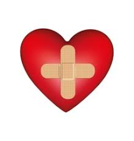

HealthyWealthy
HOME REMEDIES
In todays life people are busy in their daily schedule.
They dont have time for looking their health.
So by using this people dont need to go to the docter.
Then just follow the precautions that are given here.
This helps you to the stay fit at home just by following do's and dont's.
FEVER
DO'S
- Boiled Rice
- Soup
- Boiled potatos
- Apple
- Fruit juice
- Tulsi chai
- Egg
- Boiled milk
- Curd rice
- Oats
DONT'S
- Red meat
- Fish
- Junk Foods
- Oily foods
- Cold foods
- unpasteurized milk
- soft drinks, tea and coffee
- Spicy foods